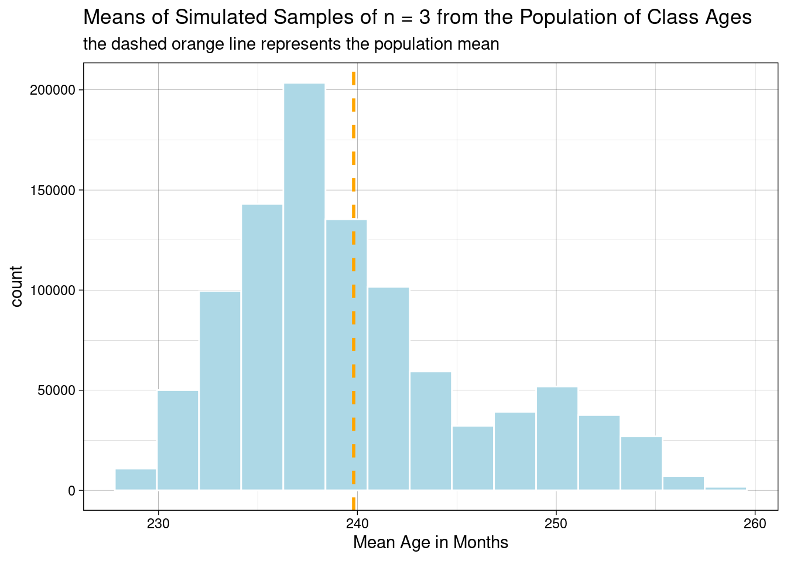
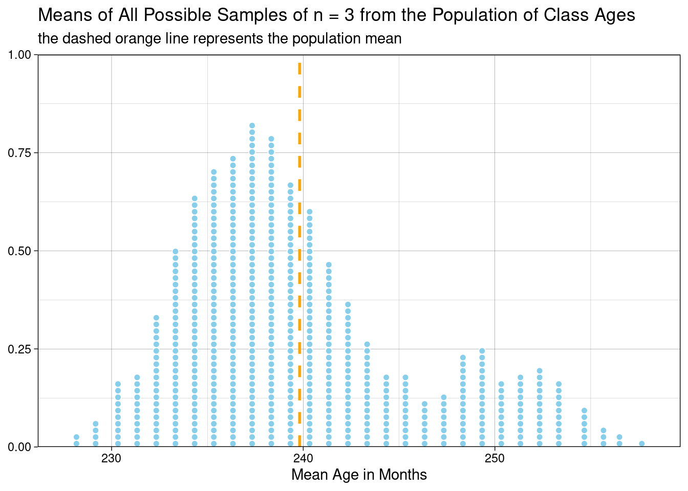
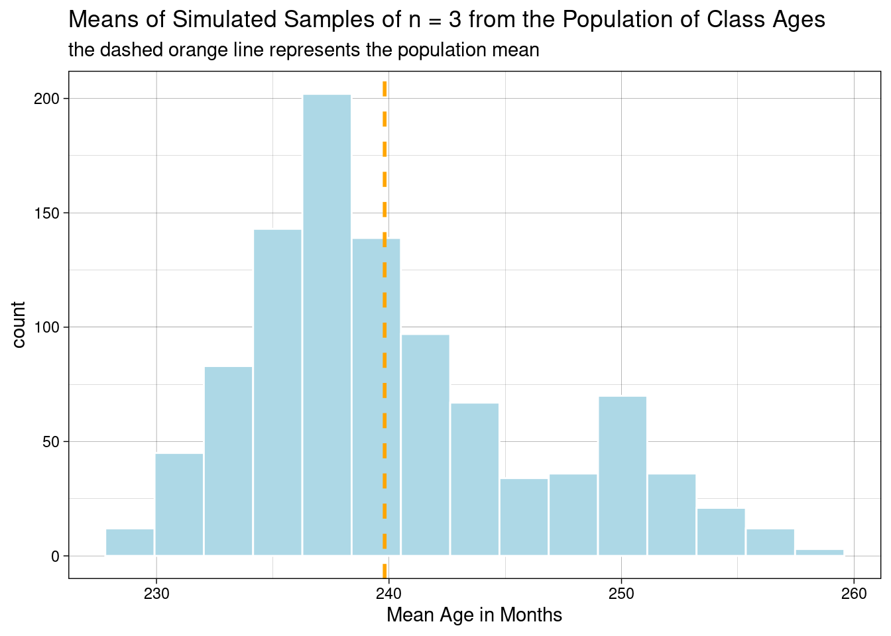

R Code for JB Statistics Video Lessonlibrary(tidyverse)
library(knitr)
library(kableExtra)
library(combinat) # required for combn() functionThe video uses a population of 16 students in a college classroom as an example. The variable of interest is the students’ ages in months. We can create this population in R as a vector.
pop_ages <- c(234, 241, 233, 227, 251, 227, 242, 239, 241, 238, 230, 246, 231, 243, 238, 276)Each value in the vector has a location or index numbered from 1-16. We can identify a value via its location and access it with [ ] index notation. We can choose multiple values by using a vector.
pop_ages[1] # first value[1] 234pop_ages[10] # tenth value[1] 238pop_ages[c(1, 10)] # first and tenth values[1] 234 238pop_ages[1:10] # first through tenth values [1] 234 241 233 227 251 227 242 239 241 238The overall population mean is \(\mu\). Recall that placing () around the object prints it after assigning using <-.
(mu <- mean(pop_ages))[1] 239.8125The first random sample of n = 3 students includes students 3, 6, and 15.
sampleIDs <- c(3, 6, 15)
sample_ages <- pop_ages[sampleIDs] # use vector index [ ] to get data for sampled students
(xbar1 <- mean(sample_ages))[1] 232.6667The second random sample of n = 3 students includes students 5, 15, and 16. Notice that student 15 is included in both samples. Since each sample is independent of the other and all samples are equally likely, it is not unusual for this to happen.
sampleIDs <- c(5, 15, 16)
sample_ages <- pop_ages[sampleIDs]
(xbar2 <- mean(sample_ages))[1] 255We will take advantage of being able to choose values using [ ] to take a large number of random samples from the population. While it is possible to accomplish what we want by using the sample() function directly on the vector here, we are laying down a methodological foundation for resampling-based hypothesis tests by doing it this way.
sims <- 10^6 # number of samples
pop_N <- length(pop_ages) # population size
n <- 3 # sample size
sim_means <- numeric(sims) # vector to store the means of the random samples
# there is one location for each simulated sample
# initially this vector contains zeroes, try it!
# our for loop starts at 1 because vectors in R are indexed starting at one
# in mathematics, locations in vectors and/or matrices are numbered from 1
# the counter serves not only to count, but also to index results using [i]
for (i in 1:sims) {
sampleIDs <- sample(pop_N, n) # randomly choose n sample IDs
sim_means[i] <- mean(pop_ages[sampleIDs]) # compute/store the sample mean
}ggplot(NULL, aes(x = sim_means)) +
geom_histogram(
bins = 15,
color = "white",
fill = "lightblue"
) +
geom_vline(
xintercept = mu,
color = "orange",
linetype = "dashed",
size = 1
) +
labs(
title = "Means of Simulated Samples of n = 3 from the Population of Class Ages",
subtitle = "the dashed orange line represents the population mean",
x = "Mean Age in Months"
) +
theme_linedraw()
mean(sim_means)[1] 239.8167sd(sim_means)[1] 6.133535# if you are confused about this, run it a few times and see what happens
# clarify for yourself so that you understand what pop_N is and what n is
sample(pop_N, n)[1] 6 10 5How many possible samples are there if we wanted to find the exact sampling distribution?
choose(pop_N, n)[1] 560The combn() function finds all the unique samples of n = 3 from the population and outputs the results as a matrix, one sample in each column. We can then compute all the sample means and plot them. Notice the NULL where we would usually put the dataset name in the ggplot() function, since the data are in a vector instead of a data frame. We can do this for fairly small populations, but the number of combinations increases nonlinearly when the population size increases, so it quickly becomes intractable. You should notice how closely our random resampling results resemble the exact distribution.
n <- 3
all_samples <- combn(pop_ages, n) # each matrix column is one sample
all_means <- colSums(all_samples) / n # compute the mean of each sample
ggplot(NULL, aes(x = all_means)) +
geom_dotplot(
dotsize = 0.35,
color = "white",
fill = "skyblue"
) +
geom_vline(
xintercept = mu,
color = "orange",
linetype = "dashed",
size = 1
) +
scale_y_continuous(NULL, expand = c(0, 0)) +
labs(
title = "Means of All Possible Samples of n = 3 from the Population of Class Ages",
subtitle = "the dashed orange line represents the population mean",
x = "Mean Age in Months"
) +
theme_linedraw()
Notice that the average of all possible sample means is exactly the the same as the population mean.
mean(all_means)[1] 239.8125mean(all_means) == mu[1] TRUEWe could also do this example using tidyverse tools. If you look “under the hood” of these functions, you’d see a process much like the one above.
pop_ages <- tibble(ages = c(234, 241, 233, 227, 251, 227, 242, 239, 241, 238, 230, 246, 231, 243, 238, 276))mu <- pop_ages %>%
summarize(mu = mean(ages)) %>%
pull(mu)This code replaces the simulation loop above, but it relies on the same fundamental functions. We are taking fewer resamples here (1000 vs. 100,000) because of runtime. The results will have more sampling variability.
sim_means <- replicate(
n = 1000, # this n is the number of replications
expr = {
pop_ages %>%
slice_sample(n = 3) %>% # this n is the sample size
summarize(sample_mean = mean(ages)) %>%
pull(sample_mean)
}
)Plotting the simulation results is identical to the previous simulation.
ggplot(NULL, aes(x = sim_means)) +
geom_histogram(
bins = 15,
color = "white",
fill = "lightblue"
) +
geom_vline(
xintercept = mu,
color = "orange",
linetype = "dashed",
size = 1
) +
labs(
title = "Means of Simulated Samples of n = 3 from the Population of Class Ages",
subtitle = "the dashed orange line represents the population mean",
x = "Mean Age in Months"
) +
theme_linedraw()
We can use summarize() if we make our simulation output a tibble first.
tibble(sim_means) %>%
summarize(
mean_of_sim_means = mean(sim_means),
sd_of_sim_means = sd(sim_means)
) %>%
kable(digits = 2) %>%
kable_styling(
full_width = FALSE,
position = "left",
font_size = 14
)| mean_of_sim_means | sd_of_sim_means |
|---|---|
| 240.14 | 6.21 |
sessionInfo()R version 3.6.0 (2019-04-26)
Platform: x86_64-redhat-linux-gnu (64-bit)
Running under: Red Hat Enterprise Linux
Matrix products: default
BLAS/LAPACK: /usr/lib64/R/lib/libRblas.so
locale:
[1] LC_CTYPE=en_US.UTF-8 LC_NUMERIC=C
[3] LC_TIME=en_US.UTF-8 LC_COLLATE=en_US.UTF-8
[5] LC_MONETARY=en_US.UTF-8 LC_MESSAGES=en_US.UTF-8
[7] LC_PAPER=en_US.UTF-8 LC_NAME=C
[9] LC_ADDRESS=C LC_TELEPHONE=C
[11] LC_MEASUREMENT=en_US.UTF-8 LC_IDENTIFICATION=C
attached base packages:
[1] stats graphics grDevices utils datasets methods base
other attached packages:
[1] combinat_0.0-8 kableExtra_1.3.4 knitr_1.34 forcats_0.5.1
[5] stringr_1.4.0 dplyr_1.0.7 purrr_0.3.4 readr_2.0.1
[9] tidyr_1.1.3 tibble_3.1.4 ggplot2_3.3.5 tidyverse_1.3.1
loaded via a namespace (and not attached):
[1] Rcpp_1.0.7 svglite_2.0.0 lubridate_1.7.10 assertthat_0.2.1
[5] digest_0.6.27 utf8_1.2.2 R6_2.5.1 cellranger_1.1.0
[9] backports_1.2.1 reprex_2.0.1 evaluate_0.14 highr_0.9
[13] httr_1.4.2 pillar_1.6.2 rlang_0.4.11 readxl_1.3.1
[17] rstudioapi_0.13 jquerylib_0.1.4 rmarkdown_2.11 labeling_0.4.2
[21] webshot_0.5.2 munsell_0.5.0 broom_0.7.9 compiler_3.6.0
[25] modelr_0.1.8 xfun_0.26 pkgconfig_2.0.3 systemfonts_1.0.2
[29] htmltools_0.5.2 tidyselect_1.1.1 fansi_0.5.0 viridisLite_0.4.0
[33] crayon_1.4.1 tzdb_0.1.2 dbplyr_2.1.1 withr_2.4.2
[37] grid_3.6.0 jsonlite_1.7.2 gtable_0.3.0 lifecycle_1.0.0
[41] DBI_1.1.1 magrittr_2.0.1 scales_1.1.1 cli_3.0.1
[45] stringi_1.7.4 farver_2.1.0 fs_1.5.0 xml2_1.3.2
[49] bslib_0.3.0 ellipsis_0.3.2 generics_0.1.0 vctrs_0.3.8
[53] tools_3.6.0 glue_1.4.2 hms_1.1.0 fastmap_1.1.0
[57] yaml_2.2.1 colorspace_2.0-2 rvest_1.0.1 haven_2.4.3
[61] sass_0.4.0